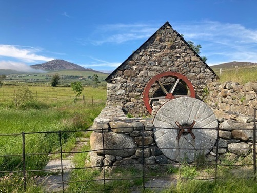

Le moulin de Carnguwch
Le moulin de plain-pied a été remanié, probablement à l’occasion de la démolition de la maison du meunier, à laquelle il était rattaché. L’accès se fait par une large porte du côté ouest, et il n’y a pas de fenêtres. La cavité où était la roue survit au pignon nord-est, avec un trou bouché pour l’essieu. Il y a maintenant un étang sous le moulin, mais aucune trace du leat (canal) qui amenait l’eau à la roue d’origine.
